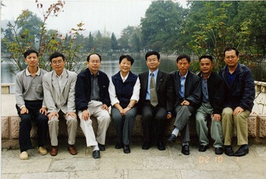

这是一段我与原贵州工学院地质系地勘(78)级八位同学1982年毕业实习和20年后又重逢见面的故事。
1982年的3月，我接受原贵州工学院地质系安排的带地勘(78)级八位同学毕业实习并指导毕业设计（论文）的任务。
地勘(78)级同学从进校到大四，我都没有机会给他们上过一堂课，全班同学我都不认识，当然这八位同学我也一个都不认识。
毕业实习的地点是贵州遵义铜罗井锰矿。我被矿上安排在一间空荡荡的废弃家属房，八位男学生安排在我住处旁侧的用苇席和油毛毡塔建的简陋工棚里，饭就近在矿山一个工段的简易食堂解决。
到达矿山，正是一个星期六的下午。当我安排好自己的床铺及书籍，堵塞好破露的窗户，一看快到食堂开晚饭的时间，就去看看同学们。不料八位学生连行李都没有打开，八个人跑得无影无踪，直到晚上也不见一位回来，当然也没有一个学生来向我打过响声。
时置3月底，正是贵州恶劣的倒春寒天气。春寒料峭的寒气阵阵袭来，我心在阴冷寒风中瑟瑟发抖，孤独度过在贵州遵义铜罗井锰矿第一个周日。
还好，周一上午八位学生都整齐回来，我们开始了正常实习。请矿山地测科技术人员介绍矿山情况，借阅矿山地质资料，带同学踏勘矿区地表及井下，几天的接触从他们七嘴八舌中才知道，八位同学在大学三年多，没有一个当过班上的学生干部，他们笑嘻嘻的对我说：“我们八个，没有一个当过小组长。”我想，这就是八个人跑得无影无踪，没有一个学生来向我打响声的原因吧。
他们中的王思德及陶平，怯怯的来找我，说他俩想考研究生，希望少给他俩安排野外工作，他俩想多有点时间作考研的准备。他们中的石峰，主动告诉我，他善于作图，其它方面比较臭；另外几位，还是嘻嘻哈哈的对我说：“反正我们学习成绩不行，班上的尖子都不在我们组，我们是差生，毕业设计（论文）你看着办吧。”
（78）级，严格来说是全国恢复高考正规的第一届，他们几乎是从县城、乡镇、边远农村、工厂、知青点，数万人中考上贵州工学院这所全省唯一的工科院校的，他们是有理想、有能力、有志向的骄娇者，我不能被他们玩笑的表面对他们有成见，尽管我对他们的真实情况一无所知，但我可以利用在野外的几十天与他们朝夕相处的时间，把我对矿产资源勘查和研究的思路、工作态度、方法潜移默化影响他们，尽力而为吧。当然我也答应了王思德及陶平的要求，尽量多给他俩时间备战考研。我不能误人子弟。
十多天后，王思德和陶平双双对我说：“我们已写信回家了，我们决定不考研了，还是利用毕业实习的可贵机会，多学点。” 十多天后相互陌生的师生成了朋友，成了探讨问题的同行。即使在条件恶劣的矿井下，大家依然兴致昂然。陈志明同学用尽全身解数，弄来一台高闪光相机，我们师生九人就在遵义铜罗井锰矿的探矿坑道中留影，这张珍贵的照片至今我已保存了30多年。
一天，我带几个同学野外回来，发现我的枕头上整整齐齐放了六个又大又红的苹果，这在上世纪80年代初的贵阳市都是难得一见的稀罕物，何况又是矿山？我知道，肯定是学生給的，又是谁呢？几番打听，原来是王思德的母亲不辞辛苦赶到铜罗井锰矿矿山苦口婆心劝儿子坚持考研，而王思德不知用什么方法说服了他的母亲。母亲不再坚持，留下好不容易买到的苹果给爱子补充营养，而她的爱子却把这稀罕物用心的悉数放在我的枕头上，还不让同学告诉我是他的苹果。一阵阵暖流在我心中环绕，倒春寒的鬼天气已退去，天空露出春天和煦的阳光。直至今日，昏暗灯光下那六个又大又红的苹果整整齐齐放在我枕头上的印记我依然挥之不去。
按学校毕业设计及毕业论文的教学要求是一个学生一题，经20多天对矿山生产矿段、勘探矿段、地表地质的调查，八位同学按自已的兴趣及长处与我商定了各自的题目，再一次带着问题到野外、井下观察采样，再次查阅前人工作的资料，一个个独立完成他们的毕业实习报告，回校后顺利完成毕业论文或毕业设计。毕业答辩时，这八位在班上不起眼的同学中有五位取得“全优”，有三位取得“良好”成绩，毕业实习激发了他们的潜能，使尚无自信的学生对今后的前程充满信心。他们毕业后都奔赴各部门的野外地质队。

几年后，我收到王思德的一封信，信中告之他利用沉积矿产工作的思路及黔中铝土矿形成的古地理及地球化学环境分析，在前人找矿丢弃的地段查明一个中型铝土矿，他已被本系统评为优秀的青年地质工作者，那时他也仅仅25岁左右，我非常为这位年青人他高兴。
2002年的初秋，地勘(78)级同学毕业20年后回到母校聚会，我有幸被邀参加，看到阔别20年的七位同学，他们都长大了，脱掉了稚气，充满了踌躇满志及稳沉，他们多是各地质部门的高级工程师、老总、项目领导……我们就在校园再次留影。
这几位同学中，有的代表我国有色地勘在世界各地开拓矿产资源勘查市场，有的已取得中国地质大学的博士学位并是贵州大学资源与环境工程学院外聘的硕士、博士生导师。看到他们今天的成就，想起当年他们的稚气，我不尽思绪万千。
回想上世纪60、70、80、90年代，原贵州工学院地质系的老师们，大多数都严格执行教学安排，把心用在教授学生的身上。系领导深知教授理工科的本科生其毕业实习这个环节的重要性，因此系及教研室对毕业实习安排都很仔细，事先要派出有经验的老师选好实习点，毕业实习期间系主任必须到每个实习点检查并在现场解答或探讨师生业务上的难题，记得当年地质系系主任傅琨教授年近60岁还亲临遵义铜罗井锰矿与我们一起跑野外，检查每一位的毕业设计（论文）选题。贵州工学院地质系虽是地方院校，但毕业实习点的选择的确是大手笔，仅我参与的实习点有我国知名的特大型云南个旧锡矿、广西大厂锡矿，广西拉磨铅锌矿、湖南郴州多金属矿区的大型铅锌矿、稀有金属矿，云南上厂铁矿，贵州万山及丹寨特大型汞矿，贵州斗蓬山铝土矿，贵州黔西南数个特大型及大型金矿……其学生实习参与矿产地质调查的点面涉足到内蒙、新疆、山东、两广、云南。这种严谨、认真的教学学风，使我系数十年培养若干届地质专业人才，一批又一批活跃在国内外地质战线上。
其实，上述的毕业实习师生情在很多老师及他们所教授的学生中都发生过，数十天师生同吃、同住；共同顶烈日、同下矿井，同对一个问题反复探讨，不生出深厚的感情才怪。且不少老师与不少的年青的学生已成忘年之交，成战友及同事，这种情谊就是原贵州工学院地质系（现贵州大学资源与环境工程学院）纯洁的情谊，作为一位老师我终生不会忘记的。
贵工地质系地勘59级 张竹如2015年09月12日